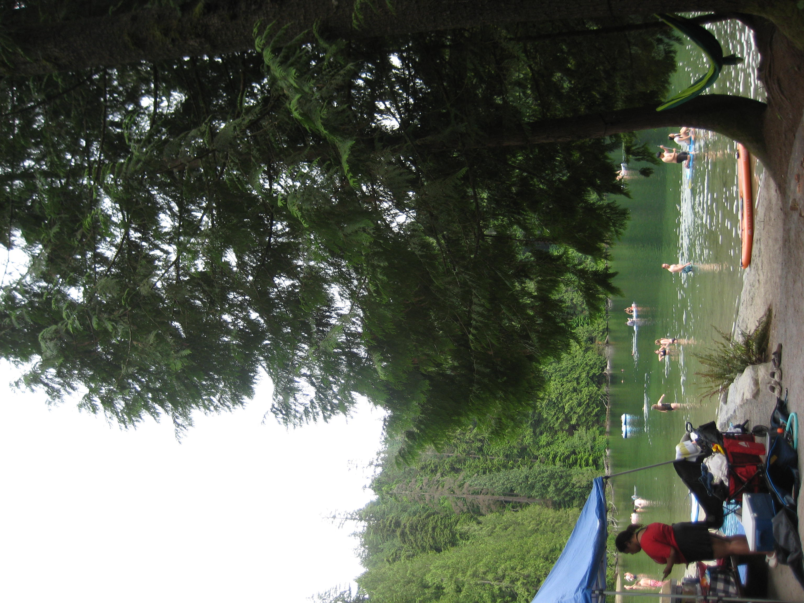
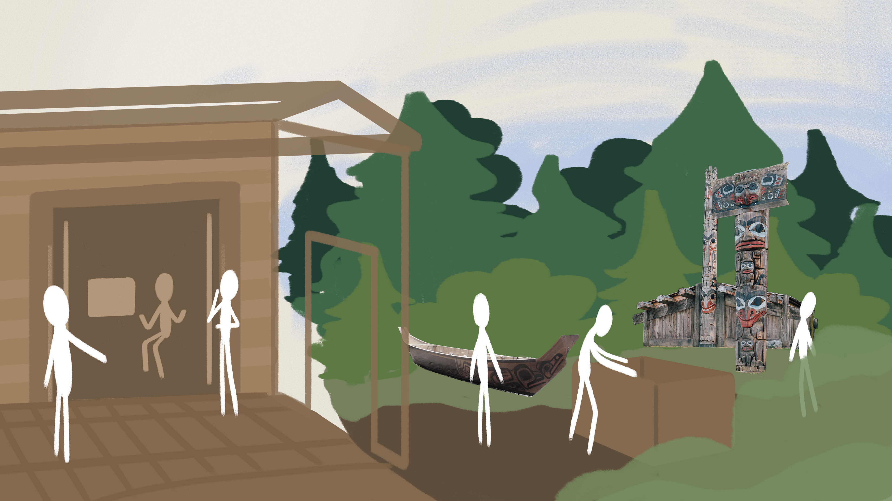

About Me
Hi, I'm Aiden
I am a 3rd year student at Simon Fraser University's School of Interactive Arts and Technology, where I specialize in visual design and UX/UI. I work across Adobe CC and Figma, with proficiency in Python, Java, HTML/CSS, and JavaScript as a way to communicate between user needs and technology. Having grown up in communities design often overlooks, I’m driven to create work that is genuinely accessible and inclusive, regardless of background. I am a designer who focuses on bringing storytelling and human connection within my work, so people and their voices can be seen.
Outside of my career, I enjoy staying active through recreational sports like volleyball, and mentoring younger students within my local running club. I also am the head of my program's events team, where I host hackathons and social get-togethers.
Gallery



